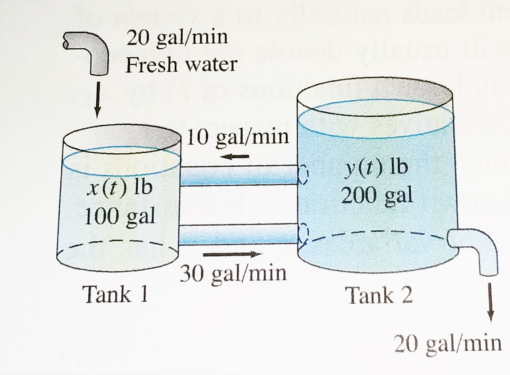

Lesson 13: Linear Algebra - eigenvalues#
Equations and eigenvalues
import numpy as np
import matplotlib.pyplot as plt
%matplotlib inline
from sympy import * #import sympy routines; sympy = "SYMbolic PYthon"
Wheatstone bridge example#
The resistor network shown below is a Wheatstone bridge. It can be used to calculate unknown resistances of objects. The current through resistor \(R_5 = 0\) when \(R_1R_4=R_2R_3\), so if we know \(R_3\) and \(R_4\) and make \(R_2\) a variable resistor and have \(R_1\) be the unknown, we can tune \(R_2\) while measuring the current through \(R_5\) to find \(R_1\).
{kind=link}
A more general problem is to compute the currents through each resistor. Using Ohm’s Law and Kirchoff’s Voltage Law we can calculate the mesh currents \(x_1, x_2, x_3\) using the equations below.
Then \(i_1 = x_1, i_2 = x_2, i_3 = x_3-x_1, i_5=x_1-x_2,\) and \(i_6 = x_3\).
Let \(R_i = 10 \hspace{4mm} \forall i\) and let \(V=5\). Set up and solve these equations for \(x_1, x_2, x_3\) below.
A = np.array([[40, -10, -10],
[-10,30,-10],
[-10,-10,30]])
b = np.array([[0],
[0],
[5]])
newb = np.array([[0,0,5]]).transpose()
#print(newb)
x = np.linalg.solve(A,newb)
print(x)
[[0.08333333]
[0.10416667]
[0.22916667]]
Chemical reaction example#
Balance the chemical reaction below.
#show np.linalg.solve doesn't work
#use sympy Matrix and M.rref() command
#relate back to Math250, Math 275
Chemical reaction example#
Balance the chemical equation for the combustion of butane liquid (C4H10) in the presence of oxygen gas to yield carbon dioxide and water in the gaseous phase:
A = np.array([[4,0,-1,0],
[10,0,0,-2],
[0,2,-2,-1]])
b = np.array([[0,0,0]]).transpose()
x = np.linalg.solve(A,b)
---------------------------------------------------------------------------
LinAlgError Traceback (most recent call last)
Input In [4], in <cell line: 7>()
1 A = np.array([[4,0,-1,0],
2 [10,0,0,-2],
3 [0,2,-2,-1]])
5 b = np.array([[0,0,0]]).transpose()
----> 7 x = np.linalg.solve(A,b)
File <__array_function__ internals>:5, in solve(*args, **kwargs)
File ~\Anaconda3\lib\site-packages\numpy\linalg\linalg.py:380, in solve(a, b)
378 a, _ = _makearray(a)
379 _assert_stacked_2d(a)
--> 380 _assert_stacked_square(a)
381 b, wrap = _makearray(b)
382 t, result_t = _commonType(a, b)
File ~\Anaconda3\lib\site-packages\numpy\linalg\linalg.py:203, in _assert_stacked_square(*arrays)
201 m, n = a.shape[-2:]
202 if m != n:
--> 203 raise LinAlgError('Last 2 dimensions of the array must be square')
LinAlgError: Last 2 dimensions of the array must be square
from sympy import *
A = Matrix([[4,0,-1,0],
[10,0,0,-2],
[0,2,-2,-1]])
print(A.rref())
(Matrix([
[1, 0, 0, -1/5],
[0, 1, 0, -13/10],
[0, 0, 1, -4/5]]), (0, 1, 2))
Exercise Balance the chemical reaction below.
Calculate eigenvalues#
Calculate the eigenvalues of the matrix below using the eig command of the numpy library.
A = np.array([[1,2,3],[4,5,6],[7,8,1]])
w,v = np.linalg.eig(A)
print(w)
print(v)
[12.45416474 -0.37976219 -5.07440255]
[[-0.29373774 -0.73967882 -0.29720654]
[-0.69005397 0.66500848 -0.39870229]
[-0.66147083 -0.10314536 0.86758559]]
System of linear ODEs example#
Set up a system of differential equations that represent the amount of salt in the tanks below. Then use the eig command to help you determine the solution.
{kind=link}

A = np.array([[-.3,0.05],
[.3,-.15]])
w,v = np.linalg.eig(A)
print(w)
print(v)
[-0.36861407 -0.08138593]
[[-0.58893305 -0.22295647]
[ 0.80818183 -0.9748284 ]]
c = np.linalg.solve(v,np.array([[10,11]]).T)
print(c)
[[ -9.67225498]
[-19.3028236 ]]